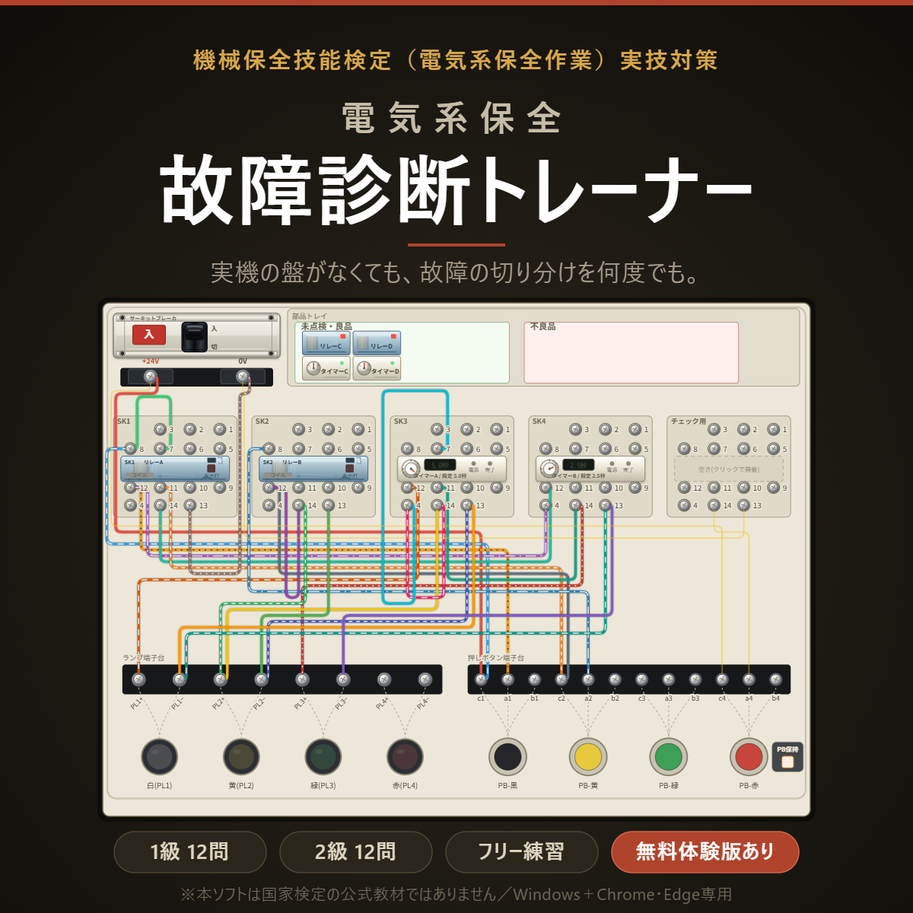

接点工房
機械保全技能検定 ／ 電気系保全作業 ／ 実技 課題2
断線・誤配線・不良リレー・不良タイマを含む制御盤から、原因を見つけて直す。修復後の盤は実際に動作させて自動判定します。ブラウザだけで動き、インストールも登録も要りません。
無料デモは2級相当の課題を1問収録。会員登録・ダウンロード不要でそのまま動きます。

課題2の何が難しいのか
電気系保全作業の実技試験は、課題1（PLCによる回路組立）と課題2（リレー・タイマの点検と、有接点シーケンス回路の点検・修復）の合計で判定されます。
事前に公表されるのは、課題1の一部だけです。問題の全体が分かるのは試験の最中で、事前公表を手がかりに答え合わせをしながら練習できるわけではありません。
課題2は事前公表がありません。そのうえ作業試験のため、正解も公表されません。
だから独学だと、練習はできても「この直し方で合っていたのか」を確かめられません。練習盤があれば実際に動かして確かめられますが、盤は1台10万円を超えます。対策講習は日程と場所が合わないことも多く、費用も安くありません。
このソフトは、そこを埋めるために作りました。修復した盤を実際に動作させ、正常な動作と一致するかを自動で判定します。配線の見た目ではなく、回路として機能しているかどうかで判定するので、教科書どおりでない配線でも、正しく動けば正解になります。
できること
断線・誤配線・空配線・部品不良を含む回路から、原因を切り分けて修復します。故障の入り方は毎回変わり、何度でもやり直せます。
直した盤を実際に動かし、正常動作と一致するかを判定します。見た目の一致ではなく、回路としての機能で判定します。
ダイヤルで電圧・抵抗を切り替え、端子間を実際に当たって確認できます。通電中の危険な操作は記録されます。
自分が配線した内容から回路図を起こし、模範解答との差分を赤枠で表示します。どこが違ったのかが図で分かります。
不良配線の残置、過剰な配線、タイマ設定の誤り、活線作業、時間超過などを減点として集計し、参考値として表示します。
白紙の盤に自由に配線して動作を試せます。作った盤はファイルに保存でき、いつでも読み込んで再開できます。
2026年度 第2回 試験日程
| 日付 | 内容 |
|---|---|
| 2026/08/24 | 受検申請 受付開始 |
| 2026/11/02 10:00 | 実技試験問題（事前公開用）の公表 |
| 2026/11/28 – 2027/02/21 | 電気系保全作業 実技試験（期間内の土曜・日曜に実施） |
| 2026/12/13 | 2級 学科試験 |
| 2027/01/10 | 特級・1級・3級 学科試験 |
日程は公益社団法人日本プラントメンテナンス協会「2026年度 第2回試験の概要」によります。受検申請の締切など最新の情報は、必ず公式サイトでご確認ください。
製品版
ダウンロード販売です。ご購入前に必ず無料デモで動作をご確認ください。
1ライセンス＝1名です。複数名でお使いの場合は法人ライセンスをご利用ください。
| ライセンス | 価格（税込） | 購入方法 |
|---|---|---|
| 5席パック | ¥39,800 | BOOTHで購入、またはメールでのお見積り・銀行振込 |
| 事業所内 人数無制限 | ¥98,000 | メールでのお見積り・銀行振込 |
| 教育機関向け | ¥50,000 | メールでのお見積り・銀行振込 |
実技試験の練習盤は1台あたり10万円を超えます。事業所内ライセンスであれば、人数の制限なく各自のパソコンで練習できます。見積書の発行、銀行振込でのお支払いに対応します。領収書はPDFにてメールで発行いたします。お問い合わせは settenkobo@outlook.jp まで。なお現在、適格請求書発行事業者の登録をしていないため、インボイス（適格請求書）は発行できません。
動作環境
| 項目 | 内容 |
|---|---|
| OS | Windows 10 / 11 |
| ブラウザ | Google Chrome または Microsoft Edge の最新版 |
| 画面 | 横1280ピクセル以上を推奨 |
| 非対応 | macOS・Safari／Firefox／スマートフォン・タブレット |
このページの無料デモはブラウザ上で動作します。製品版はダウンロードしたHTMLファイルをブラウザで開いて使う形式です（インターネット接続は不要）。macOS・Safari は、ローカルファイルでのデータ保存が制限されるため非対応としています。